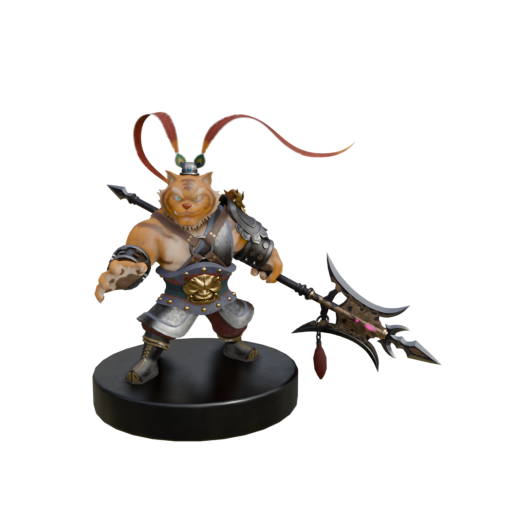
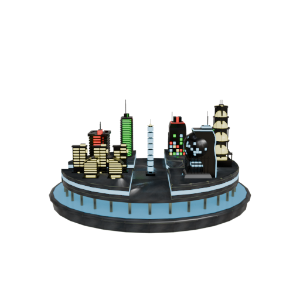
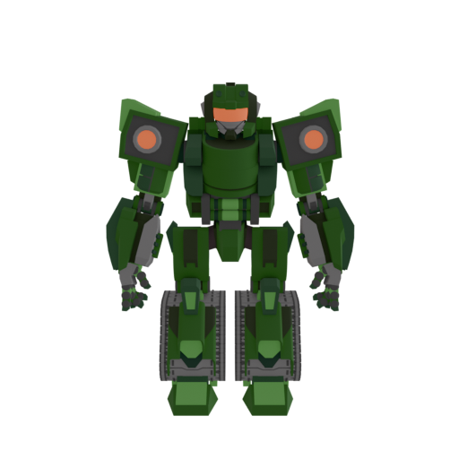
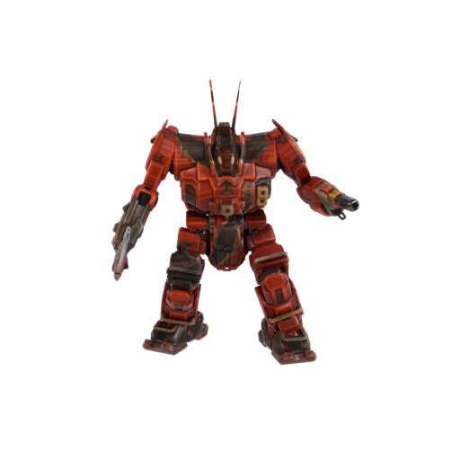
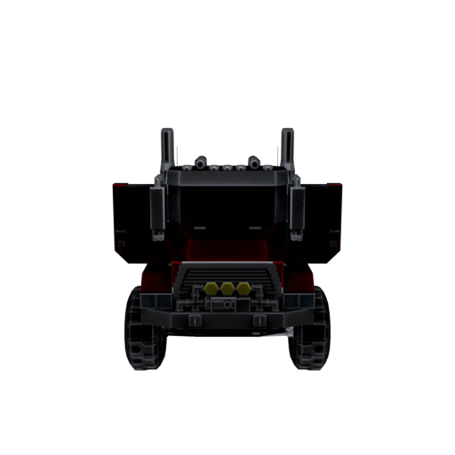
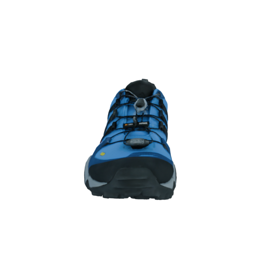

DetailGen3D: Generative 3D Geometry Enhancement via Data-Dependent Flow
Arxiv 2024
Ken Deng
1,2,3
Yuanchen Guo
2
Jingxiang Sun
1
Zixin Zou
2
Yangguang Li
2
Xin Cai
4
Yanpei Cao
2
Yebin Liu
1
Ding Liang
1,2
1
Tsinghua University,
2
VAST,
3
Sun Yat-sen University,
4
The Chinese University of Hong Kong
Arxiv
Supplementary
Home
Code
Video
Feed-forward based Reconstruction Results
Image prompt

Source:TripoSR
Source:CRM
Source:InstantMesh(NeRF)
Source:InstantMesh(Mesh)



Optimization based Reconstruction Results
Image prompt
Source:NeuS
Image prompt

Source:NeuS
Image prompt

Source:NeuS
Last Page
Home Page